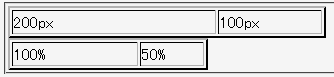

固定レイアウト表（table-layout:fixed;）で列の幅を%単位の値で指定する場合、指定値の合計が100%を超える場合でも、表全体の幅は表要素のwidthプロパティの値が適用されてしまう。
<table border="2" style="table-layout:fixed; width:200px;"> <tr> <td style="width:200px;">200px</td> <td style="width:100px;">100px</td> </tr> </table> <table border="2" style="table-layout:fixed; width:200px;"> <tr> <td style="width:100%;">100%</td> <td style="width:50%;">50%</td> </tr> </table>
| 200px | 100px |
| 100% | 50% |
どちらの表も1列目の幅が200px、2列目の幅が100pxになるはずです。
Netscape7.1標準モード
%単位の値で指定した列幅の合計値が100%を超える場合、表全体の幅はtable要素のwidthプロパティの値を用い、各列の幅は各々の指定値に比例するように分配されます。上記の例では1列目の幅が100(%)、2列目の幅が50(%)なので 100:50 → 2:1 となり、1列目は約133px、2列目は約67pxが最終的な幅になります。
※本来は、枠線の幅やセルとセルの間の距離も計算しなければなりません。